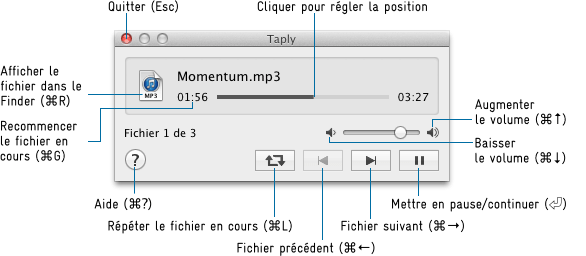

Taply est un lecteur de fichiers audio simple. Bien que de nombreux outils similaires existent pour macOS, Taply a été conçu pour être aussi minimal que possible : une petite fenêtre flottante qui se ferme automatiquement après la lecture, idéale pour parcourir rapidement un grand nombre de fichiers audio.
2.0.0-dev (maintenu par Richard Li) :
Double-cliquez sur Taply pour ouvrir un panneau de sélection de fichiers. Sélectionnez un ou plusieurs fichiers audio pour commencer la lecture. Les fichiers qui ne peuvent pas être lus seront ignorés automatiquement, et Taply se fermera après la lecture de tous les fichiers.
Faites un clic droit ou Control-clic sur un espace vide de la fenêtre pour accéder au menu contextuel : accéder directement à un fichier de la liste de lecture, vider la liste, ouvrir les préférences ou quitter Taply.
Déposez des fichiers audio ou des dossiers contenant des fichiers audio sur la fenêtre ou l'icône de l'application pour les ajouter à la fin de la file de lecture.

La liste des formats audio pris en charge dépend de la version du système. Sur macOS 10.14 et versions ultérieures, au moins les formats suivants sont pris en charge :
Carsten Blüm — bluem.net
macapps@bluem.net
Richard Li — othercat@gmail.com
Utilisez ce logiciel à vos propres risques. Si pour une obscure raison un dommage ou une perte de données pouvait résulter de son utilisation (ce qui est selon moi pratiquement impossible), la responsabilité vous incombe entièrement.
Taply utilise "PlayBufferedSoundFile" de Kurt Revis (www.snoize.com), qui est soumis aux conditions de licence suivantes :
Copyright © 2002-2003, Kurt Revis. All rights reserved.
Redistribution and use in source and binary forms, with or without modification, are permitted provided that the following conditions are met:
• Redistributions of source code must retain the above copyright notice, this list of conditions and the following disclaimer.
• Redistributions in binary form must reproduce the above copyright notice, this list of conditions and the following disclaimer in the documentation and/or other materials provided with the distribution.
• Neither the name of Snoize nor the names of its contributors may be used to endorse or promote products derived from this software without specific prior written permission.
THIS SOFTWARE IS PROVIDED BY THE COPYRIGHT HOLDERS AND CONTRIBUTORS "AS IS" AND ANY EXPRESS OR IMPLIED WARRANTIES, INCLUDING, BUT NOT LIMITED TO, THE IMPLIED WARRANTIES OF MERCHANTABILITY AND FITNESS FOR A PARTICULAR PURPOSE ARE DISCLAIMED. IN NO EVENT SHALL THE COPYRIGHT OWNER OR CONTRIBUTORS BE LIABLE FOR ANY DIRECT, INDIRECT, INCIDENTAL, SPECIAL, EXEMPLARY, OR CONSEQUENTIAL DAMAGES (INCLUDING, BUT NOT LIMITED TO, PROCUREMENT OF SUBSTITUTE GOODS OR SERVICES; LOSS OF USE, DATA, OR PROFITS; OR BUSINESS INTERRUPTION) HOWEVER CAUSED AND ON ANY THEORY OF LIABILITY, WHETHER IN CONTRACT, STRICT LIABILITY, OR TORT (INCLUDING NEGLIGENCE OR OTHERWISE) ARISING IN ANY WAY OUT OF THE USE OF THIS SOFTWARE, EVEN IF ADVISED OF THE POSSIBILITY OF SUCH DAMAGE.